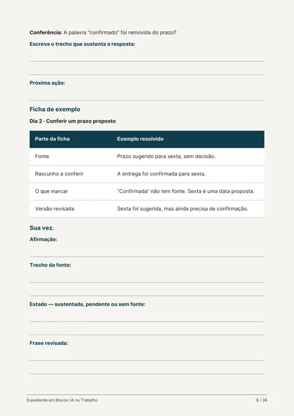

Expediente em Blocos:
IA no Trabalho
IA no trabalho, do zero, em sessões de quinze minutos
Pratique e-mails, atas e checklists em 14 sessões. Cada uma traz exercício resolvido, modelo reutilizável e um caminho manual para fazer a mesma tarefa.
Guia de prática e caderno de modelos
Para quem é e o que esperar
O guia foi feito para auxiliares e analistas que trabalham com documentos administrativos e querem começar pelas tarefas de rotina. Parte do zero e usa casos fictícios. Quem procura automação instalada, treinamento avançado de programação ou certificação vai encontrar aqui um caderno de prática introdutória.
Como funciona
Com IA com Fonte e Revisão, cada bloco começa por um trecho que sustenta o trabalho. Depois vêm o pedido bem delimitado, o rascunho e a conferência de cada afirmação. A rota manual usa a mesma fonte e o mesmo gabarito. Os quinze minutos são uma divisão sugerida de prática. As fichas podem ser retomadas.
O que vem dentro
- Guia digital em PDF com 14 sessões de 15 minutos.
- Um exercício resolvido e comentado por sessão.
- Caderno editável em Markdown com 14 modelos reutilizáveis, cada um com prompt, instrução manual e campos em branco. Os mesmos modelos aparecem no PDF.
- Índice de tarefas, folha de revisão e gabaritos no guia.
- Bônus imprimível de duas faces com o que retirar dos exemplos e o que conferir antes de compartilhar.
Leia uma amostra
Dia 2 · Conferir um prazo proposto
| Parte da ficha | Exemplo resolvido |
|---|---|
| Fonte | Prazo sugerido para sexta, sem decisão. |
| Rascunho a conferir | A entrega foi confirmada para sexta. |
| O que marcar | “Confirmada” não tem fonte. Sexta é uma data proposta. |
| Versão revisada | Sexta foi sugerida, mas ainda precisa de confirmação. |
Sua vez. Afirmação: ______. Trecho da fonte: ______. Estado — sustentada, pendente ou sem fonte: ______. Frase revisada: ______.


Oferta e preço
Expediente em Blocos: IA no Trabalho — R$ 39,90 em pagamento único. O download inclui o PDF digital e o caderno de modelos editável em Markdown. A rota manual está disponível em todas as sessões.
Quero o guia por R$ 39,90Demonstração local. O checkout não está habilitado; nenhum pagamento é realizado nesta página.
- Vendedor
- [a definir]
- CNPJ
- [a definir]
- E-mail de suporte
- [a definir]
- Endereço
- [a definir]
Sete dias para arrependimento
Se desistir da compra online, solicite o reembolso em até sete dias, pelo canal de suporte indicado na confirmação da compra. O pedido independe de uso do material.
Perguntas frequentes
Qual é o formato?
É um PDF com texto, tabelas, exercícios, modelos e bônus imprimível, acompanhado de um caderno editável em Markdown. Os campos também podem ser levados para papel ou editor de texto.
Como recebo o material?
Após a confirmação da compra, os arquivos ficam disponíveis por link de download.
Preciso pagar uma ferramenta de IA?
Não. Cada sessão inclui uma alternativa manual. Quem já usa uma ferramenta permitida pode aplicar os prompts aos exemplos fictícios.
Serve para começar do zero?
Sim. A preparação e as duas primeiras sessões ensinam a delimitar um pedido e conferir a resposta.
Preciso mandar documentos da empresa?
Os exercícios já trazem fontes fictícias. Use essas fontes para a prática e siga as regras do seu trabalho antes de compartilhar qualquer material.
Tenho de concluir cada sessão em quinze minutos?
Quinze minutos é o bloco sugerido. A ficha pode ser retomada de onde parou.
Como solicito reembolso?
Para uma compra online, solicite em até sete dias pelo canal de suporte indicado na confirmação. O pedido independe de ter começado a prática.
Comece por um pedido e uma conferência
Abra a primeira ficha, escolha papel ou editor e use o exemplo criado para praticar. O próximo bloco já indica o que revisar.